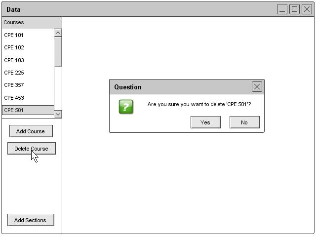

Section 2.3.2.3: Removing a Course
The administrator can remove a course by clicking the Remove button under the course heading of the Schedule drop down. A list of courses appear. The administrator clicks on the one that needs to be deleted and then a prompt appears asking if the user is sure that the course should be deleted. The administrator clicks the ok button and the database deletes the data. Figure 27 illustrates the delete course prompt.

Figure 27: Course Remove Confirmation
prev: course-edit | next: data-room | up: data-course | index: index